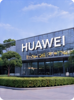
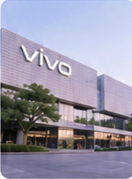
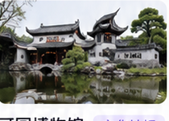
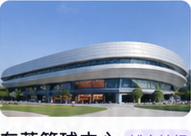
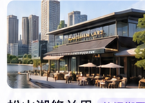

华为小镇
企业参访走进华为松山湖基地，了解科技创新与研发生态。
时间范围：10 月 25 日下午—26 日
定位：参会人才延伸体验，深度感受湾区创新活力
温馨提示：时间待大会通知，具体路线以实际安排为准

走进华为松山湖基地，了解科技创新与研发生态。

探索智能终端创新与全球化发展之路。

岭南园林代表，感受东莞历史与人文魅力。

地标建筑打卡，感受城市运动活力。

湖畔休闲生活街区，体验松湖慢生活。
请通过大会官方渠道或合作方平台查看
ⓘ 温馨提示：具体参与方式以大会最新通知或合作方安排为准。